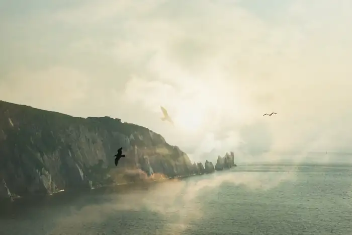
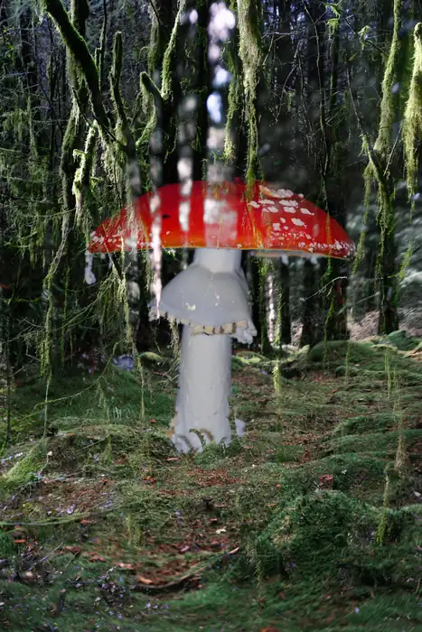
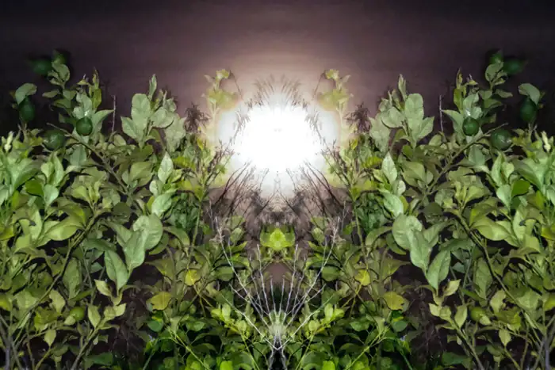
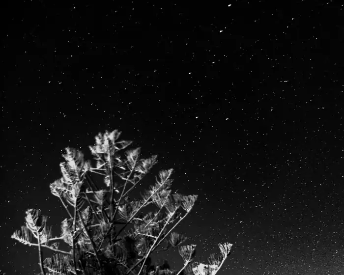
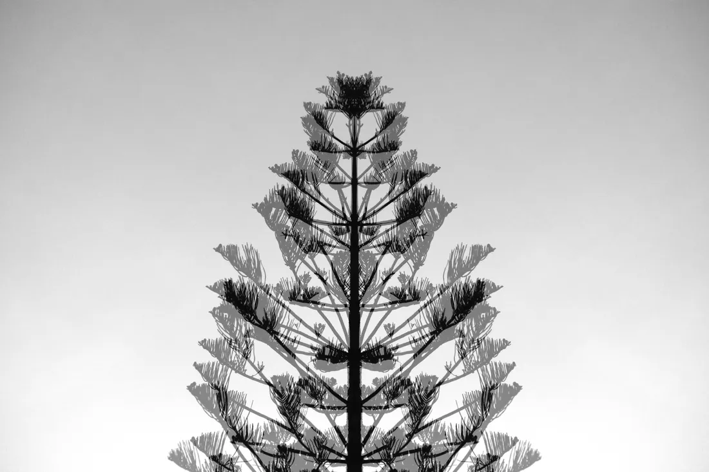

Nature studies
A collection of photographs from the woods and coast, from chalk cliffs to forest-floor fungi.





A collection of photographs from the woods and coast, from chalk cliffs to forest-floor fungi.




